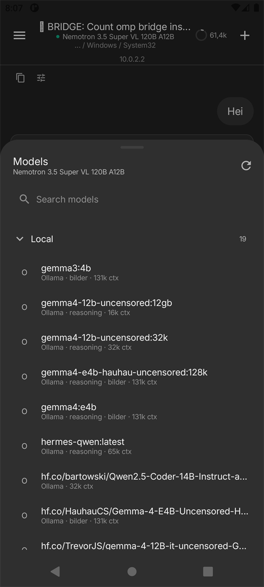
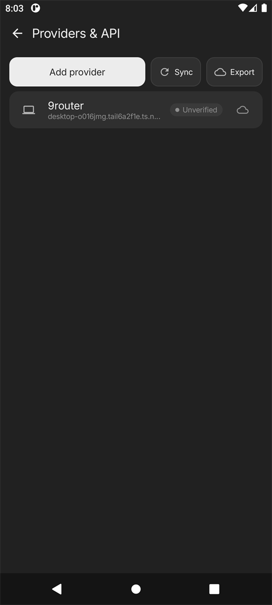
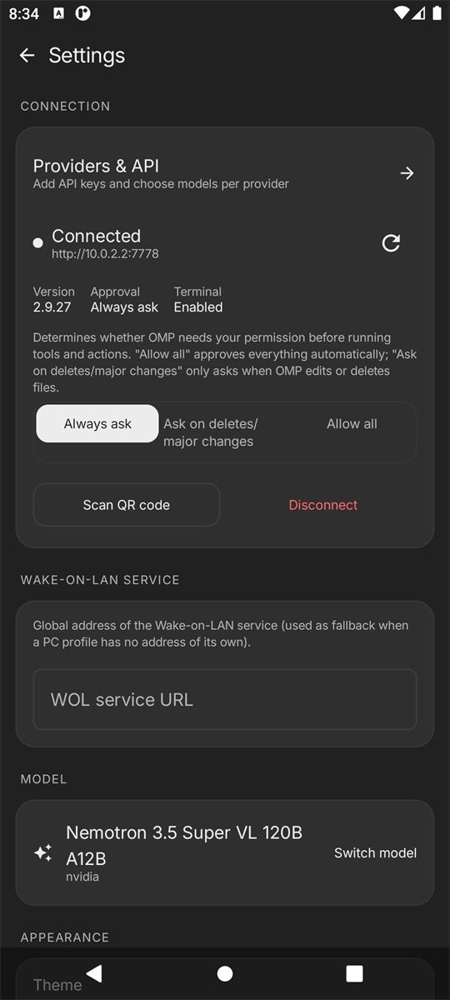

Control your OMP agent from your phone.
Nimay OMP Chat connects your Android device to the Oh My Pi (OMP) coding agent running on your PC. Chat, approve actions, browse files, use the terminal, and switch models over Wi-Fi or Tailscale — with your data staying on your own machine.
Made for real agent workflows
A focused bridge to the agent on your machine — not a generic chatbot wrapper.
Two-way provider sync
Add, edit, or delete providers in the app and sync with the PC. The PC remains the source of truth for providers and API keys.
Keystore-backed secrets
API keys received from the PC are stored in the Android Keystore, protected by the platform.
Live agent control
See tool calls, file edits, terminal output, and approval prompts on your phone in real time.
Wi-Fi or Tailscale
Use your local network or connect securely from anywhere with Tailscale (recommended). No port forwarding, no cloud relay.
Fast pairing
Start the bridge, scan the QR code, and connect. Manual entry and deep links are supported.
Projects, files & terminal
Browse project folders, manage files, run commands, and follow Git state from the app.
Model-aware
Providers, models, favorites, and hidden models stay in sync while device preferences remain local.
Resilient by design
If the bridge is unreachable, local changes are kept so you can retry when the connection returns.
Mirrored on GitHub Releases · Update manifest: updates/latest.json
Clean, focused experience
A closer look at the Android app.




Quick start
Install the bridge on your PC, install the app, pair once, and you’re ready.
1. Install the bridge (PC)
- Windows: run the installer and start the bridge.
- Linux: install the
.deb,.rpm, Flatpak, or extract the tarball. - The bridge runs OMP locally and exposes it securely to the app.
2. Install and pair the app
- Install the Android APK on your phone.
- Open the bridge on your PC and scan the QR code from the app.
- Connect over the same Wi-Fi/LAN, or use Tailscale when away.
Security & privacy
Local-first control with minimal exposure.
Under your control
- No account, no cloud relay: the agent runs on your machine with your own provider accounts.
- Token-protected bridge: requests require a pairing/access token (except limited public endpoints where applicable).
- Keystore-backed secrets: API keys on Android are stored in the Android Keystore.
- Action visibility: agent actions and approvals are surfaced in the app.
Network guidance
- Keep the bridge on a trusted network.
- Tailscale is recommended for secure remote access.
- Avoid exposing the bridge port to the public internet.
- Verify downloads with SHA256SUMS.